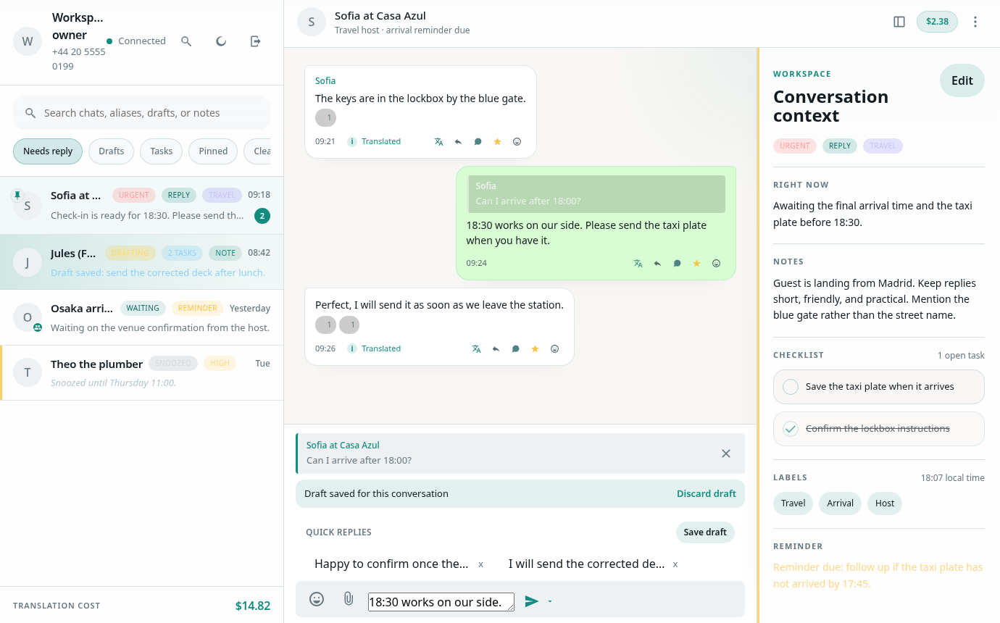
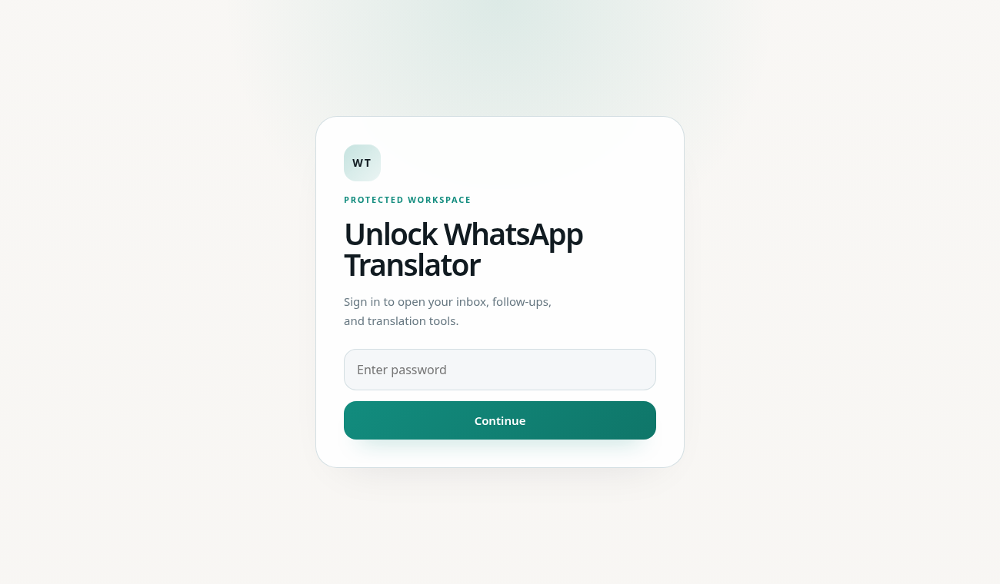
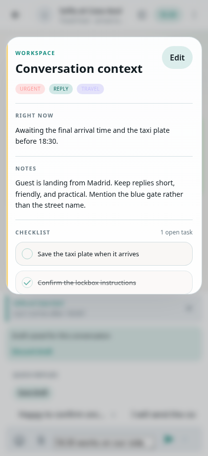
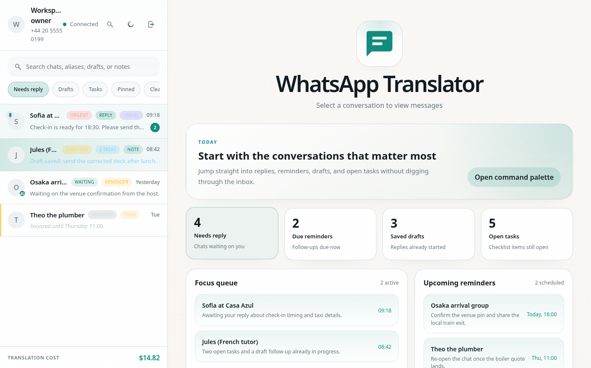

Rust core for the application layer
The server, storage, translation, OAuth, and MCP pieces live in the Rust app, which makes the runtime predictable and easy to deploy as one service.
Self-hosted WhatsApp workspace
WhatsApp Translator combines a Rust backend, a local web UI, SQLite storage, optional OpenAI features, and an MCP endpoint so teams and tinkerers can work from one calm inbox.



Quick start
git clone git@github.com:vultuk/whatsapp-translator.git
cd whatsapp-translator
export WA_WEB=true
export OPENAI_API_KEY=your_key_here
cargo run --releaseWhat it does
The interface is built around day-to-day messaging tasks: reviewing threads, translating in and out of your default language, drafting replies, saving follow-ups, and sending a cleaner answer with the right context attached.

Scan a QR code once and keep the session stored locally so the web UI can track chats, unread work, and follow-ups.
Use OpenAI-backed translation when it helps, while keeping a default language so already-readable messages are left alone.
The UI surfaces notes, reminders, and AI-assisted compose tools so you can reply in the right tone without losing the thread.
The built-in MCP surface means other tools can work against the same account and message data without bolting on a separate integration layer.
Why it feels hackable
The server, storage, translation, OAuth, and MCP pieces live in the Rust app, which makes the runtime predictable and easy to deploy as one service.
A dedicated `wa-bridge` binary handles the WhatsApp Web protocol through `whatsmeow`, while the Rust app communicates with it over JSON lines.
The web UI is intentionally easy to iterate on. Frontend work can happen against Storybook stories and demo data without needing a live account connected first.
Repository layout
.
├── src/ Rust app, web server, storage, translation, MCP
├── wa-bridge/ Go bridge that speaks WhatsApp Web
├── web/ Static frontend and Storybook stories
└── docs/ GitHub Pages site for the projectSetup
The docs below follow the current repository setup: `WA_WEB=true` enables the web UI, `OPENAI_API_KEY` turns on AI features, and persistent storage keeps your session alive.
This path is ideal for development. If `go` is available, Cargo will try to build `wa-bridge` automatically.
export WA_WEB=true
export OPENAI_API_KEY=your_key_here
cargo run --releaseIf Go is not installed, build `wa-bridge` manually and set `WA_BRIDGE_PATH` before starting the app.
Use the repository template, mount a persistent volume at `/data`, and protect the UI with `WA_PASSWORD` if the deployment is public.
1. Click Deploy on Railway
2. Mount a persistent volume at /data
3. Set OPENAI_API_KEY for AI features
4. Set WA_PASSWORD if the UI is public
5. Deploy and open the generated Railway domainIf `WA_PORT` is not set, the app will use Railway's `PORT` automatically.
The repo includes a Dockerfile, so you can build the app image and keep state in a named volume.
docker build -t whatsapp-translator .
docker run --rm -it \
-p 3000:3000 \
-v whatsapp-translator-data:/data \
-e WA_WEB=true \
-e OPENAI_API_KEY=your_key_here \
whatsapp-translatorAfter startup, open `http://localhost:3000` in your browser.
Useful environment variables
| Variable | Purpose |
|---|---|
WA_WEB |
Required to serve the web UI and API. |
OPENAI_API_KEY |
Turns on translation and AI compose features. |
WA_PASSWORD |
Adds a password gate for hosted deployments. |
WA_DATA_DIR |
Sets where session and message databases are stored. |
UI workflow
The frontend ships with stories and fixtures so component work can be reviewed in isolation. That keeps the contribution loop fast when you are tuning layout, icons, or interaction details.
npm --prefix web install
npm --prefix web run storybook -- --host 0.0.0.0 --port 6006Open source posture
This project reads best as a practical codebase. It is small enough to understand, opinionated enough to be useful, and structured so design tweaks, protocol work, and automation features can evolve independently.
Start here
Clone the repo, bring your own API key if you want AI features, and keep the web UI behind a password when you publish it.